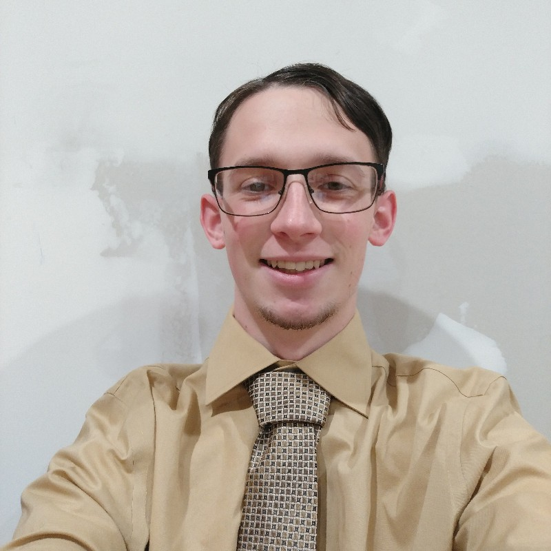

About Me
Interests
I have a passion for technology, and I enjoy to tare apart cellphones. I also repair cellphones as well (screen, battery, board repairs). I have been trying my hand at micro soldering and board level repairs. I also do general soldering fixing cables and redoing old solder joints. I also enjoy retro gaming, I have build a arcade machine with my father. A windows computer is inside that runs the Hyperspin fronted. When I am not working on electronics, I am doing school work, running, relaxing, or playing sax (I play alto, tenor, and bari).
(Image taken by me, 3/18/2021)
Academics
High School
I have taken about two years of high school courses. I stopped taking HS courses junior year, and have resumed band senior year. The rest of my courses are online college courses (2020-2021 Course Catalog for course details)
- Biology (8th Grade for HS credit)
- Advanced Algebra 1
- Band (Freshman, Sophomore, and Senior Year, Not junior year due to family health concerns with COVID-19)
- English 9
- Health
- Physical Science (9th due to taking Biology in 8th)
- Spanish 1
- World Studies
- 20 th Century History
- Advanced Geometry
- Flex Credit: Introduction To Quantum Computing [Qubit By Qubit]
College
A mix of Urbana University (UU) Franklin University (FRU), and Columbus State Community College (CSCC). Originally I attended UU (Fall 2018- Spring 2020), but transfered to FRU (Summer 2020 - Current) after the university was dissolved. Courses taken at UU will be marked with [UU], and courses taken at CSCC will be marked with [CSCC].
- General Psychology (PSYC-110) [UU]
- General Chemistry I Lecture & Lab (CHEM-216 & 216L) [UU]
- College Writing (ENG-120) [UU]
- Interpersonal Communication (COMM-150) [UU]
- Fundamental Algebra (MATH-150) [UU]
- College Algebra (MATH-160) [UU]
- Problem Solving With Computing (COMP-101) [UU]
- Intro Ethical Analysis/Reason (HUMN-211) [UU]
- Introduction to Computer Science/Object Oriented Programming (COMP-111)
- Object Oriented Data Structures/Algorithms I (COMP-121)
- Principles of Computer Organization (COMP-201)
- American Government (POSC-204)
- Learning Strategies (PF-321)
- Communication Ethics (COMM-315)
- Principles/Computer Organization (COMP-201)
- Principles of Computer Networks (COMP-204)
- Database Management Systems (COMP-281)
- Cyber Security Fundamentals (ISEC-200)
- Introduction to Web Page Construction (WEBD-101)
- Principles of Finical Planning (FPLN-300)
- Programming Language Principles/Practice (COMP-215)
- Popular Culture (HUMN-240)
- Web Information Systems Programming (WEBD-236)
- Beginning Spanish I (SPAN-1101) [CSCC]
- Java Script for Programmers (WEBD-146)
- Computer Science Practicum I (COMP-294)